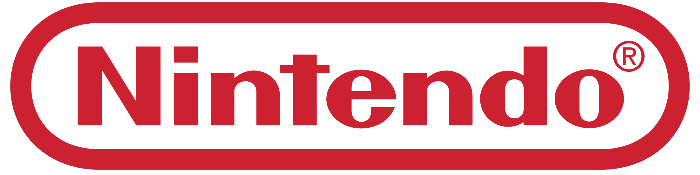
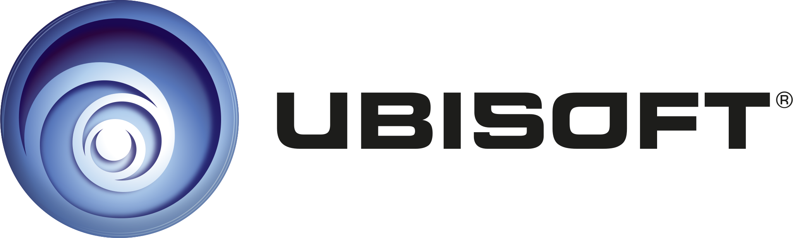

In dit artikel staan drie van mijn 'role model (IT) companies'.

1. Nintendo
Bijna iedereen van mijn generatie is opgegroeid met Nintendo. Thuis heb ik een kast vol Wii, Wii U en DS games. Nintendo is een groot bedrijf dat software en hardware ontwikkelt, produceert en verkoopt over de hele wereld.
In Europa kan je aan de slag bij Nintendo in deze afdelingen:
- Finance, Legal, HR & Audit
- IT
- Localisation & Translation
- Marketing & Digital Business
- Supply Chain & Distribution
- Testing, QA & Customer Care
Mocht je bijvoorbeeld in Amerika aan de slag willen bij Nintendo, dan kan dat ook in Software Development, Game Development en Design.
Nintendo is een professioneel bedrijf waar iedereen welkom is en de ruimte krijgt om hun talent en creativiteit te laten zien. Werken bij mijn favoriete bedrijf in de gaming industrie zou natuurlijk leuk zijn, dus mocht ik later iets met IT willen doen, dan is dit zeker een mooi doel.

2. Ubisoft
Ubisoft is een groot game development bedrijf. Dit bedrijf heeft locaties over de hele wereld en heeft een groot aanbod aan verschillende 'teams waar je in kan werken, o.a.:
- Art & Animation
- Audio & Video
- Design & Creative Direction
- Programming, IT & Technology
- Quality Management & Localisation
- Sales & Monetisation
Voor Ubisoft is het van groot belang dat alle medewerkers zich er gehoord voelen. Inclusiviteit is erg belangrijk. Als ik bij Ubisoft zou willen werken, zou ik waarschijnlijk bij het Design & Creative Direction team willen.
3. Microsoft
Microsoft gebruiken we inmiddels allemaal. Het bedrijf is, net als Nintendo en Ubisoft, gigantisch. Microsoft staat uiteraard bekend om het ontwikkelen van softwaresystemen en -applicaties. Als je er wil werken, zijn er ruim genoeg verschillende functies om uit te kiezen. Ook hier zou ik waarschijnlijk voor een Design-gerelateerde functie kiezen.
Net als Nintendo en Ubisoft legt Microsoft de nadruk up inclusiviteit en diversiteit. Buiten dat om, vindt Microsoft het belangrijk dat er sprake is van een 'growth mindset'. Iedereen moet kunnen groeien en ontwikkelen.
Bronnen:
- https://nintendoeurope.csod.com/ux/ats/careersite/1/home?c=nintendoeurope&page=about
- https://nintendoeurope.csod.com/ux/ats/careersite/1/home?c=nintendoeurope&page=home
- https://careers.nintendo.com/job-openings/
- https://www.ubisoft.com/en-us/company/about-us/
- https://www.ubisoft.com/en-us/company/about-us/diversity-inclusion
- https://www.ubisoft.com/en-us/company/careers/our-jobs
- https://careers.microsoft.com/v2/global/en/professions.html
- https://careers.microsoft.com/v2/global/en/culture